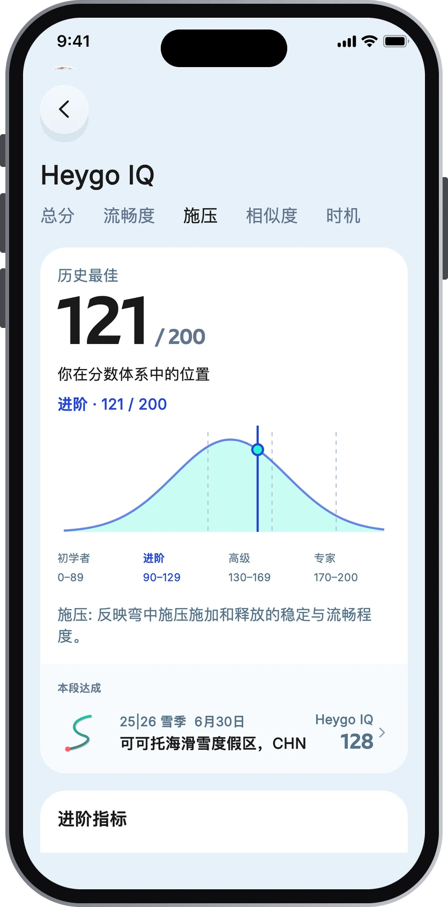
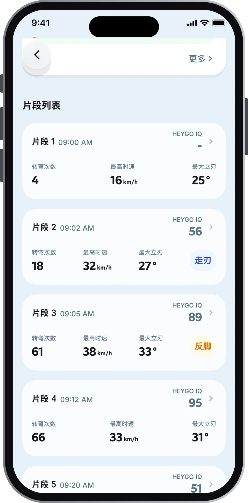
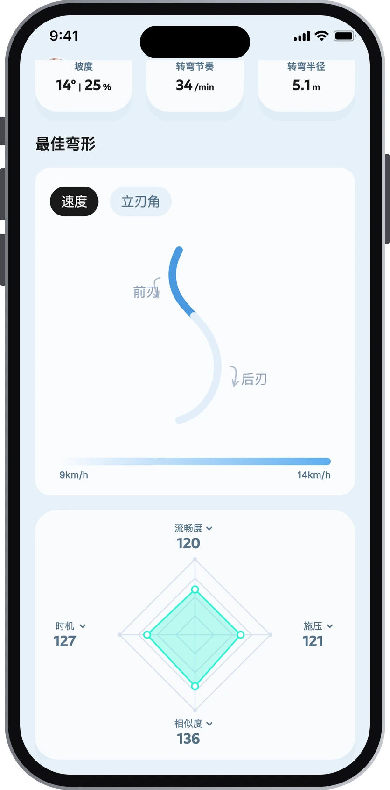
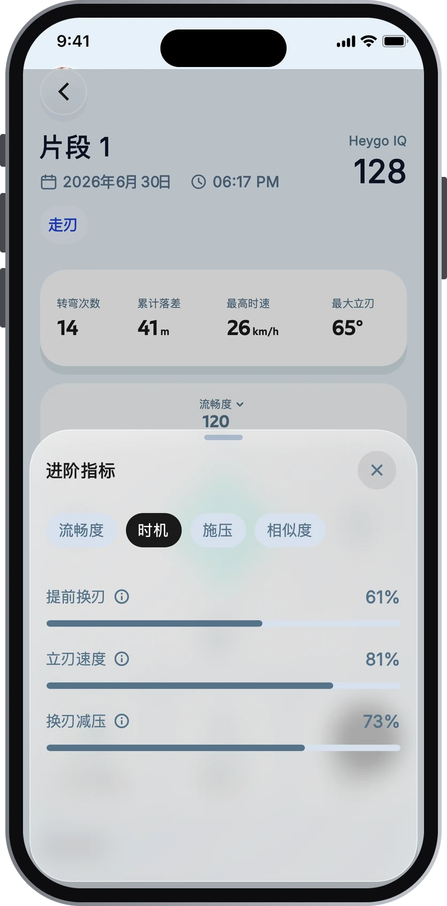
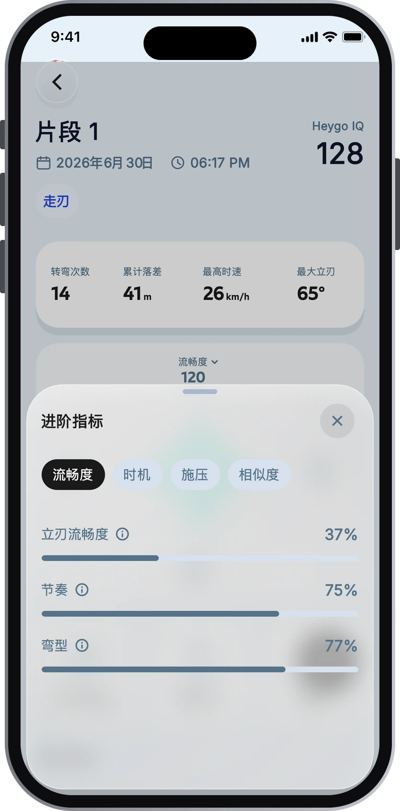
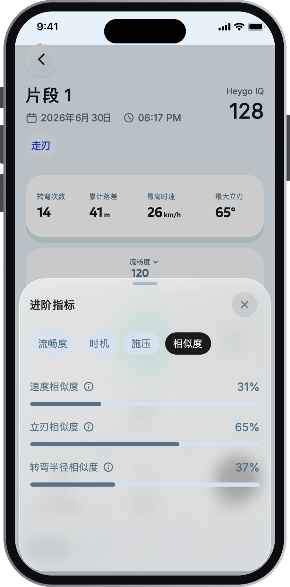
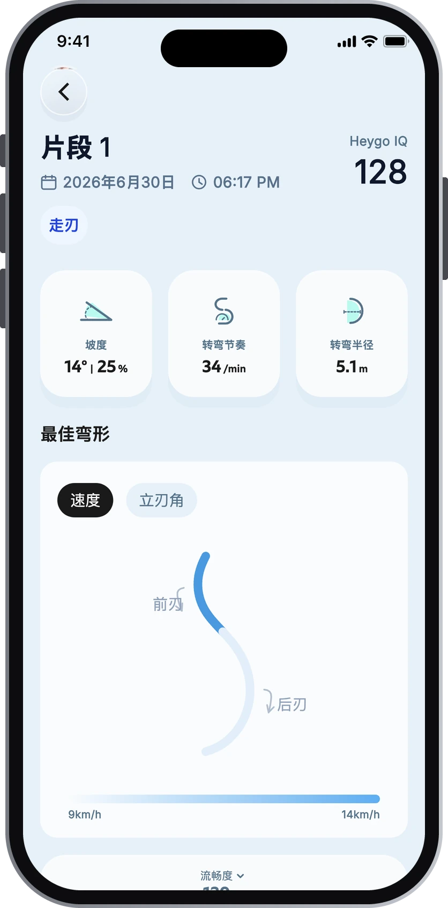

App 三个入口：首页（回看每天每趟）· Go（滑行 + 对话）· 我的（个人数据）
01
Heygo IQ滑行能力分
一个 0–200 的综合分，把你的滑行技术浓缩成一个数字。
- 怎么用
- 由时机、施压、流畅度、相似度四个维度合成，分初学者（0–89）、进阶（90–129）、高级（130–169）、专家（170–200）四档。今天比昨天进步了多少、这一趟和上一趟谁更好，看这个数就知道。
- 在哪里
- 首页顶部大卡片；每一天、每一趟、每个片段的右上角；「我的」里有历史最高分。


左右滑动查看更多界面 →
02
Run Report单趟报告
每滑完一趟，自动生成这一趟的复盘。
- 怎么用
- 一段话总结这趟滑得怎么样，附距离、落差、最高速度、最大刃角；再列出做得好的地方、和上一趟的对比、Heygo Insight（数据 → 归因 → 技能 → 练习）和推荐练习。点开推荐练习，有视频示范和分步动作要领。坐缆车时看一眼，下一趟就知道练什么。
- 在哪里
- 滑完一趟，Go 页面自动出现报告卡片，点「更多」看全文；也可以从 首页 → 某一天 → 某一趟 打开。


左右滑动查看更多界面 →
03
Day Report雪日报告
一整天的滑行总结。
- 怎么用
- 当天的总距离、落差、最高速度、最大刃角和最佳一趟；Heygo IQ 分布（可和前几天对比）；四个维度在各趟之间的变化曲线；再加上今日亮点、主要问题和下次训练建议。收工后看，今天练得怎么样一目了然。
- 在哪里
- 首页 → 雪迹里点某一天 → 「生成日报」（每天一次）；Go 页面也会推送日报卡片。

04
Segment 分析片段详情
每一趟会被自动切成几个「片段」——一串连续的转弯算一段，停下来就开始下一段。片段是 Heygo 看你技术的最小单位。
- 怎么用
- 每个片段都有自己的 Heygo IQ、基础数据、四维雷达图、最佳弯形和逐弯分析；AI 亮点卡先告诉你这段哪里做得好，再给下一趟可以试的一件事。每趟还会标出「最佳片段」。
- 在哪里
- 首页 → 某一天 → 某一趟 → 片段列表，点任一片段进入。
自动识别动作场景
滑了反脚或者走刃（Carving），Heygo 都能识别出来，并在单趟详情下方的片段列表里给对应片段打上「反脚」「走刃」标签，一眼就能找到。


左右滑动查看更多界面 →
05
进阶指标4 个维度 · 13 项
Heygo IQ 背后的明细：13 项进阶指标，按四个维度归类。
- 怎么用
- IQ 告诉你「多少分」，进阶指标告诉你「差在哪」。每个维度都能展开看具体指标和说明。
- 在哪里
- 片段详情页的雷达图，点任一维度展开。
时机Timing
换刃和立刃建立的时机
- 提前换刃
- 立刃速度
- 换刃减压
施压Pressure
弯中施压和释放是否稳定顺畅
- 施压质量
- 离心力
- 弯型闭合
- 转向速度
流畅度Flow
立刃角度和节奏衔接得顺不顺
- 立刃流畅度
- 节奏
- 弯型
相似度Similarity
前刃弯和后刃弯像不像
- 速度相似度
- 立刃相似度
- 转弯半径相似度




左右滑动查看 4 个维度 →
06
弯型最佳弯形
把这一段里最有代表性的弯画出来，前刃弯、后刃弯各是什么形状，一眼看清。
- 怎么用
- 看弯是不是圆润的 C 形、有没有把弯收完、前后刃是否对称。「弯型」同时也是流畅度维度下的一项指标；片段还会按小弯、中弯、大弯、混合弯型分类。
- 在哪里
- 片段详情 → 最佳弯形。

07
ChatbotHeygo 教练对话
随时可以问的 AI 滑雪教练。
- 怎么用
- 它看得到你每一趟、每一天的数据和报告，也记得之前聊过什么，所以回答是针对你本人的。「今天哪里进步了？」「后刃弯总收不住怎么办？」「下一趟练什么？」都可以直接问，还会推荐对应的练习。
- 在哪里
- 底部 Go 页面就是对话界面；某一天、某一趟、某个片段的详情页点「和教练聊聊」，会带着这段滑行一起问。

08
实时语音Heygo 语音功能
滑行中戴上耳机，实时听到教练的声音。
- 怎么用
- 不用掏手机，教练就在耳边。分三个模块：Coach 帮你边滑边改，播报让你随时知道自己滑得怎么样，关怀在你一个人滑的时候照看你。
- 在哪里
- Go 页面开始滑行；教练模式可选 详细（认真练，提醒最多）/ 简洁（放松滑，只提要紧的）/ 静音（安静滑，练完再看）。
Coach边滑边改，像教练在身边
- 滑行问题提醒发现问题时告诉你哪里不对、接下来试什么；等你停下来再说，不在转弯中打断你。
- 提醒后问题纠正你改过来了，第一时间告诉你「这次对了」。
- 多次提醒问题无进步同一个问题反复出现，换个角度再讲一次。
- 缆车读报告坐缆车时把刚才这趟的报告读给你听。
播报不看手机，也知道自己滑得怎么样
- 开始滑行出发时一句开场，告诉你已经开始记录。
- 里程碑转弯数、距离、趟数、速度、落差到了节点就报给你。
- 结束评语一趟滑完，给一句总结。
- 设备电量提醒设备电量低时提前提醒你。
关怀一个人滑，也有人照看
- 摔倒提醒摔了之后问一句「你还好吗」。
- 休息提醒连续滑太久，提醒你歇一歇。

想更直接地体验 Heygo AI Coach？
可以试着模仿业余滑雪者，滑出下面这些问题（包括但不限于）。Heygo 的模型会识别出你滑行中这些比较关键的问题，并给你对应的教学和语音反馈。
- 甩板尾
- 缺少上半弧
- 缺少提前换刃
- 立刃不稳定
- 立刃过高（突突突）
- 换刃犹豫